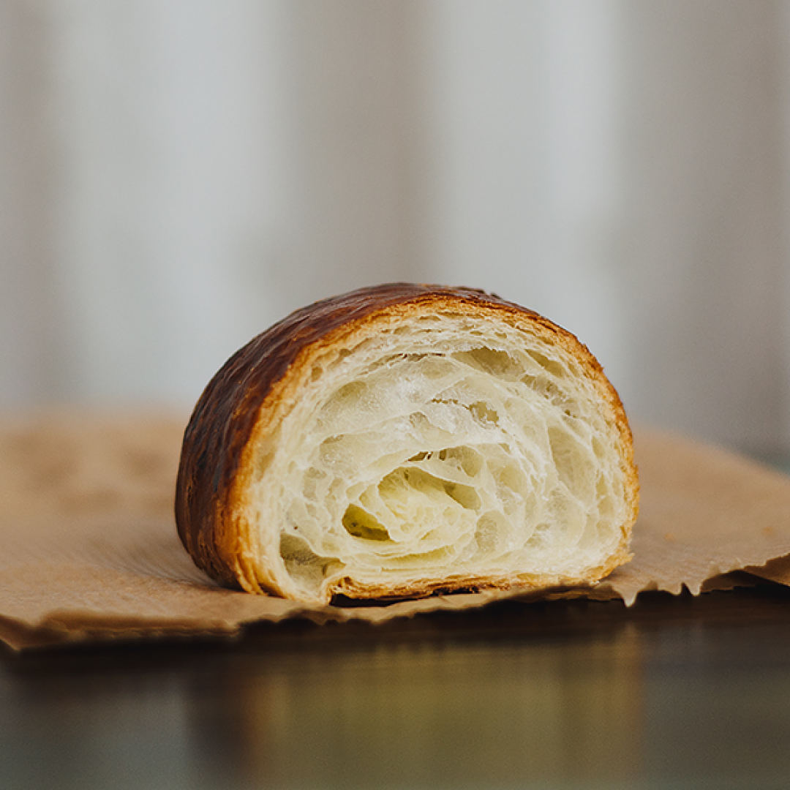

Kruasanai su šokoladu (iš šaldytos sluoksniuotos bemielės tešlos)
2020.10.29 10:59

LT German (Deutsch) English (English) Spanish (español) Lithuanian (lietuvių) Polish (polski) Russian (русский) Meniu Mano išsaugoti receptai Alkoholiniai kokteiliai Brendžio kokteiliai Degtinės kokteiliai Džino kokteiliai Likerio kokteiliai Romo kokteiliai Šampano kokteiliai Tekilos kokteiliai Vermuto kokteiliai Viskio kokteiliai Pasaulio virtuvė Lietuviški patiekalai Azijietiški patiekalai Indiški Patiekalai Itališki patiekalai Kiniški patiekalai Bulvių patiekalai Paukštienos patiekalai Antienos patiekalai Kalakutienos patiekalai Vištienos patiekalai Apkepai Desertai Bandelės Keksai ir keksiukai Sausainiai Saldainiai Patiekalai pusryčiams Blynai Sumuštiniai Daržovių patiekalai Daržovės ir atsargos žiemai Greitai pagaminami patiekalai Grybų patiekalai Mėsos patiekalai Jautienos patiekalai Kepsniai ir kotletai Kiaulienos patiekalai Patiekalai iš faršo Triušienos patiekalai Jūros gėrybių patiekalai Nealkoholiniai gėrimai Kavos Kalėdiniai patiekalai Kepiniai Kiaušinių patiekalai Košės Makaronai Mišrainės Pyragai Obuolių pyragai Šokoladiniai pyragai Varškės pyragai Trupininiai pyragai Padažai ir pagardai Patiekalai pietums Sriubos Patiekalai vakarienei Patiekalai iškylai Šašlykai Kūčių patiekalai Žuvies patiekalai Lašišos patiekalai Silkės patiekalai Tuno patiekalai Patiekalai vaikams Patiekalai velykoms Patiekalai visai šeimai Picos Salotos Sveiki patiekalai Tortai Troškiniai Užkandžiai Užkandžiai prie alaus Vieno kąsnio užkandžiai Varškės patiekalai Veganiški receptai Veganiški pyragai Vegetariški patiekalai Virtinukai Receptai Desertai, desertas Kruasanai su šokoladu (iš šaldytos sluoksniuotos bemielės tešlos)
Kruasanai su šokoladu (iš šaldytos sluoksniuotos bemielės tešlos)
Recepto Autorius Skanūs kąsneliai
Ingredientai
šaldyta sluoksniuota bemielė tešla: 1 pakuotės šokoladas: 100 gramų kiaušinių tryniai: 1 (išplakto su 1 valgomuoju šaukštu vandens) ReklamaJums gali patikti
Gaivios vištienos ir avokado salotos Varškės pyragas su kava Desertas: Karamelinis skanėstas ReklamaRecepto paruošimas
1. Iš pradžių tešlą atšildome, lakštą padaliname į 2 dalis (jeigu dideli lakštai galite į mažiau) 2. Tuomet dedame mėgiamo šokolado bei susukame (žiūrėkite nuotraukas žemiau). Reklama 3. Po to aptepame kiaušinio trynio plakiniu bei kepame iki 220 laipsnių temperatūros įkaitintoje orkaitėje maždaug 20 minučių. Atvesiname. Skanaujame su kavos puodeliu! 4. Rekomendacija: Daugiau kruasanų receptų rasite: Kruasanų receptai . KomentuotiSekite mus:
ReklamaNekeptas varškės ir grietinėlės tortas
Noriu pasigaminti
Kreminė avižų košė su kava - tarsi fantastiškas desertas!
Noriu pasigaminti
Kriaušių uogienė su čiobreliais - nerealiai skani!
Noriu pasigaminti
Sausainiai „Smaližiaus svajonė“
Noriu pasigaminti
Riešutų batonėliai su juoduoju šokoladu
Noriu pasigaminti
Biskvitiniai pyragaičiai su apelsininiu suflė
Noriu pasigaminti
ReklamaDesertinis užkandis su braškėmis Kai užklumpa netikėti svečiai
Noriu pasigaminti
Nuostabaus skonio sūrio pyragas
Noriu pasigaminti
Riešutų sviesto saldainiai
Noriu pasigaminti
Mielinis vyniotinis su aguonomis
Noriu pasigaminti
Braškės su pipirais ir pienu
Noriu pasigaminti
Trapus ir drėgnas aguonų vyniotinis
Noriu pasigaminti
traffix.lt Desertai, desertasSekite mus:
Prisijungti Prisijungti su Google Prisijungti su Facebook Registruotis Reklama Reklama Reklama Reklama XPrisijungti
Prisijungti su Google Prisijungti su Facebook- MANTINGA | Produktai
- Naminiai kruasanai - DELFI Gyvenimas
- Sviestiniai rageliai (kruasanai) paprasčiau | NUOTRAUKOS ...
- Ar vartotinas žodis „kruasanas“? - VLKK
- Kruasanai - Saldu Saldu
- kruasanas Archives - Atrask Skonį
- Kruasanas su kiaulienos kumpeliu - Atrask Skonį
- Kruasanas - Crustum
- Kruasanai su šokoladu (iš šaldytos sluoksniuotos bemielės ...
- Jo didenybė kruasanas: prancūzų numylėtinis, pavergęs ir ...
- MANTINGA | Produktai
Šiandieną gaminame traškius sluoksniuotos tešlos sviestinius pyragėlius - kruasanus. Tešlą gaminsime patys, todėl nedelsdami pradėkime!
- Naminiai kruasanai - DELFI Gyvenimas
Taip, vartotinas. Kruasanas (pranc.croissant), prancūziškas ragelis (Tarptautinių žodžių žodynas, Vilnius, 2013, p. 458).„Kalbos patarimuose. Kn. 4: Leksika ...
- Sviestiniai rageliai (kruasanai) paprasčiau | NUOTRAUKOS ...
Kaip ir sakiau – kruasanas, puodelis kavos, stiklainėlis mėgstamo džemo, gal dar mylima muzika ar netikėti saulės spinduliai už lango – ir tai bus skanios akimirkos, kurias dar ilgai norėsis nešiotis širdy. Nes maži dalykai yra dideli dalykai, nes skanios akimirkos kuria istorijas, nes naminiai kepiniai visada yra patys ...
- Ar vartotinas žodis „kruasanas“? - VLKK
„Šviežias kruasanas turi traškėti, o viduje turi matytis daugybė plonų sluoksnių. Ką tik iškeptas ir dar šiltas kruasanas yra nuostabaus skonio. Jame visuomet jausite lengvą sviesto skonį, jis bus purus, minkštas ir žavės savo meistriška sluoksnių struktūra“, – dalijosi ji.
- Kruasanai - Saldu Saldu
Virimo kruasanas su sūriu: 1 žingsnis: kepkite tešlą. Pirmiausia reikia paruošti mieles, kurios bus kruasanų testo pagrindas. Paimkite 50 ml anksčiau virinto ir atvėsinto vandens. Supilkite skystį į gilią plokštelę ir įpilkite į jį šaukštelį granuliuoto cukraus ir mielių. Palikite juos 10–15 minučių kambario temperatūroje.
- kruasanas Archives - Atrask Skonį
DELFI - Lengvi ir gardūs – tarsi mylimojo bučinys – prancūziški raguoliai gana paprastai pagaminami ir namuose. Ir visai nereikia kas kartą jų užsimanius vykti į Prancūziją.
- Kruasanas su kiaulienos kumpeliu - Atrask Skonį
Kruasanas su mocarela 2,6 € / vnt. Kruasanas su rūkyta lašiša 2,4 € / vnt. Meniu Desertai Užkandžiai Galerija. Paslaugos Individualūs užsakymai Pristatymas Įrankių, indų nuoma. Saldu Saldu Apie mus Dažniausiai užduodami klausimai Idėjos. Susisiekite Tel. +370 (605) 60 115
- Kruasanas - Crustum
Kruasanas su karamele ir riešutais – atitinka naujus, sugriežtintus mokinių maitinimui keliamus reikalavimus Karamelė – niekad neatsibostanti klasika, ji lyg klasikos ikona, kurios skoniui atsispirti gali tik vienetai, ne veltui, tai vienas
- Kruasanai su šokoladu (iš šaldytos sluoksniuotos bemielės ...
Kruasanai | Video receptas - patiekalas, kurį nesunkiai pasigaminsite pagal šį receptą. Daug gerų, išbandytų receptų, kuriuos privalai išmėginti!
- Jo didenybė kruasanas: prancūzų numylėtinis, pavergęs ir ...
Kruasanas. 2,00 € su uogiene ir sviestu . PRADŽIAI. Marinuotos alyvuogės. 4,50 € Sezoninė sriuba. 4,00 € Matje silkė su švediška bulve, varškės ir burokėlių kremu. 7,50 € Ispaniškos menkės ir bulvių spurgytės. 5,90 € su sepijų rašalu ir ajoli majonezu .
Šiandieną gaminame traškius sluoksniuotos tešlos sviestinius pyragėlius - kruasanus. Tešlą gaminsime patys, todėl nedelsdami pradėkime!
Taip, vartotinas. Kruasanas (pranc.croissant), prancūziškas ragelis (Tarptautinių žodžių žodynas, Vilnius, 2013, p. 458).„Kalbos patarimuose. Kn. 4: Leksika ...
Kaip ir sakiau – kruasanas, puodelis kavos, stiklainėlis mėgstamo džemo, gal dar mylima muzika ar netikėti saulės spinduliai už lango – ir tai bus skanios akimirkos, kurias dar ilgai norėsis nešiotis širdy. Nes maži dalykai yra dideli dalykai, nes skanios akimirkos kuria istorijas, nes naminiai kepiniai visada yra patys ...
„Šviežias kruasanas turi traškėti, o viduje turi matytis daugybė plonų sluoksnių. Ką tik iškeptas ir dar šiltas kruasanas yra nuostabaus skonio. Jame visuomet jausite lengvą sviesto skonį, jis bus purus, minkštas ir žavės savo meistriška sluoksnių struktūra“, – dalijosi ji.
Virimo kruasanas su sūriu: 1 žingsnis: kepkite tešlą. Pirmiausia reikia paruošti mieles, kurios bus kruasanų testo pagrindas. Paimkite 50 ml anksčiau virinto ir atvėsinto vandens. Supilkite skystį į gilią plokštelę ir įpilkite į jį šaukštelį granuliuoto cukraus ir mielių. Palikite juos 10–15 minučių kambario temperatūroje.
DELFI - Lengvi ir gardūs – tarsi mylimojo bučinys – prancūziški raguoliai gana paprastai pagaminami ir namuose. Ir visai nereikia kas kartą jų užsimanius vykti į Prancūziją.
Kruasanas su mocarela 2,6 € / vnt. Kruasanas su rūkyta lašiša 2,4 € / vnt. Meniu Desertai Užkandžiai Galerija. Paslaugos Individualūs užsakymai Pristatymas Įrankių, indų nuoma. Saldu Saldu Apie mus Dažniausiai užduodami klausimai Idėjos. Susisiekite Tel. +370 (605) 60 115
Kruasanas su karamele ir riešutais – atitinka naujus, sugriežtintus mokinių maitinimui keliamus reikalavimus Karamelė – niekad neatsibostanti klasika, ji lyg klasikos ikona, kurios skoniui atsispirti gali tik vienetai, ne veltui, tai vienas
Kruasanai | Video receptas - patiekalas, kurį nesunkiai pasigaminsite pagal šį receptą. Daug gerų, išbandytų receptų, kuriuos privalai išmėginti!
Kruasanas. 2,00 € su uogiene ir sviestu . PRADŽIAI. Marinuotos alyvuogės. 4,50 € Sezoninė sriuba. 4,00 € Matje silkė su švediška bulve, varškės ir burokėlių kremu. 7,50 € Ispaniškos menkės ir bulvių spurgytės. 5,90 € su sepijų rašalu ir ajoli majonezu .
